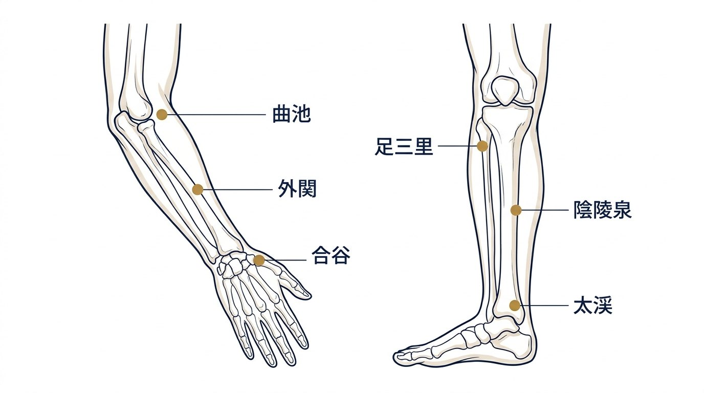

シェーグレン症候群の鍼灸
自己免疫異常で涙腺・唾液腺が炎症を起こす指定難病です。専門医での治療を最優先とし、安定期の乾燥不快感と体調を支えます。


院長YouTube解説・関連動画
唾液腺や涙腺などの唾液や涙を作る組織に炎症が起きる病気
シェーグレン症候群は、唾液腺や涙腺などの唾液や涙を作る組織に炎症が起きる病気のことです。
シェーグレン症候群を発症すると、涙や唾液を十分に作ることができなくなってしまいます。そのため、症状として口の中や目などの渇きがあります。
シェーグレン症候群は、男性より女性に多くほとんどが女性です。約9割以上が女性であると言われているほどです。
中でも、中年女性に多いです。しかし、小さな子どもから高齢者までどの年代に起こることもある病気です。
日本では、約7万人を超える人がシェーグレン症候群を発症しているとも言われています。中には、自分が発症していることに気がついていない人もいます。
シェーグレン症候群には、一次性シェーグレン症候群と二次性シェーグレン症候群があります。
一次性シェーグレン症候群は原初性のシャーグレン症候群で、他に膠原病を合わせて発症していないもののことです。
二次性シェーグレン症は、続発性のシェーグレン症候群で、候群強皮症などの皮膚筋炎や関節リウマチなど他の膠原病を合わせて起こしているもののことを言います。
一次性シェーグレン症候群にも種類があります。症状が唾液機能などの外分泌線に起こる場合は腺型、症状が外部以外の全身の臓器に症状が起こる場合は腺外型です。一次性シェーグレン症候群全体の約７割は腺型であると言われています。
シェーグレン症候群の原因は免疫機能が唾液腺と涙腺を攻撃すること
シェーグレン症候群の原因は免疫機能が唾液腺と涙腺を攻撃することです。
シェーグレン症候群は、普段は体の健康を守るために働いている免疫機能が何かの原因によって異常を起こし、体の正しい組織に対して攻撃をしてしまう病気なのです。
免疫機能が異常を起こしてしまう要因はたくさんあると考えられています。遺伝や細菌、ウイルス、女性ホルモン、環境などと関係しているのではないかと言われていますが、まだ原因について詳しい事はわかっていません。
1. 自己免疫反応の異常：
シェーグレン症候群の原因は明確には解明されていませんが、自己免疫反応の異常が重要な要因と考えられています。通常、免疫システムは体内の異物や異常細胞を攻撃し排除する役割を果たしますが、自己免疫の病気では誤って正常な組織や細胞を攻撃してしまう状態が生じます。
2. 遺伝的要因：
シェーグレン症候群は遺伝的要因による影響が示唆されています。家族歴にシェーグレン症候群を有する場合、病気を発症するリスクが高まるとされています。特定の遺伝子に変異が見られることから、遺伝的要因が病気の発症に影響を与える可能性が考えられています。
3. ホルモンの影響：
ホルモンの影響もシェーグレン症候群の発症に関連している可能性があります。女性の方が男性よりも発症率が高く、特に更年期に近づくと発症しやすくなるという特徴があります。女性ホルモンの影響が自己免疫反応に関与すると考えられています。
4. 環境要因：
環境要因もシェーグレン症候群の発症に影響を与える可能性があります。特定のウイルスや細菌感染が免疫システムに対して刺激を与え、病気の発症に寄与することが考えられています。また、環境中の化学物質や食品成分が免疫反応を変化させることも影響している可能性があります。
5. 過度の免疫反応：
シェーグレン症候群では、免疫細胞が涙腺と唾液腺に攻撃し、慢性的な炎症を引き起こします。これにより、涙液や唾液の分泌が減少し、目や口の乾燥が生じます。また、他の組織や臓器にも免疫細胞が侵入し、関節炎、皮膚症状、肺炎、腎炎などの症状が現れることがあります。
6. その他の免疫調節異常：
シェーグレン症候群の原因には他にも、免疫細胞の調節に関する異常が関与している可能性があります。例えば、T細胞やB細胞の活性化や増殖が亢進し、免疫反応が調節不能になることで発症すると考えられています。
シェーグレン症候群の症状は乾燥
シェーグレン症候群の主な症状は、ドライアイやドライマウスなどの乾燥することです。このような乾燥の症状の多くは初期の段階で現れます。
ドライアイの症状には、目の乾燥や目の異物感、目の充血、目の疲れ、目の痛み、目のかゆみなどがあります。
ドライマウスの症状には、口の乾きや口のねばねば、口腔の中の痛み、味覚異常、食べ物の飲み込みにくさなどがあります。
ドライアイの場合、目の中に入った異物を涙で洗い流すことができません。そのため、結膜や角膜に傷がつき視力の低下につながる可能性もあります。ドライマウスの場合は唾液の減少によって虫歯や歯周病につながる可能性が高くなります。
シェーグレン症候群は、全身に症状が現れることもあります。これは、外分の泌腺の動きが下がってしまうからです。
汗が出にくくなることによって鼻の乾きや皮膚の乾燥などが起こったり、膣の乾きによって性交の際に痛みが起こったりします。関節が痛んだり疲れやすくなったりするなどの症状も起こることがあります。
さらに、耳下腺に炎症が起きる耳下腺が腫れたり、他の臓器に障害が起きたり、合併将として他の病気を起こしたりすることもあります。
1. 目の乾燥と充血：
シェーグレン症候群の最も特徴的な症状の一つが目の乾燥です。涙腺の炎症により、涙液の分泌が減少し、目が乾くことで眼の表面が傷つきます。これにより、目がかゆくなったり、目の充血が見られることがあります。目の乾燥が長期間続くと、角膜に傷がつく可能性があり、視力の低下や角膜炎を引き起こすこともあります。
2. 口の乾燥と嚥下困難：
唾液腺の炎症により、唾液の分泌が減少するため、口の中が乾燥します。口の中が乾いているため、食べ物を嚥下する際に違和感を感じることがあります。嚥下困難が続くと、栄養不足や脱水症状を引き起こす可能性があります。また、口の乾燥により口内炎や歯周病が起こりやすくなることもあります。
3. 関節の痛みと腫れ：
シェーグレン症候群では、関節に炎症が生じることがあります。特に手や足の関節が痛むことが多く、関節が腫れることもあります。これにより、日常生活の動作に支障をきたすことがあります。関節痛が慢性的に続くことで、日常生活の制約や睡眠障害が生じることもあります。
4. 皮膚の乾燥と発疹：
皮膚の乾燥もシェーグレン症候群の症状の一つです。皮膚が乾燥することでかゆみを感じたり、発疹が出ることもあります。乾燥した皮膚は湿疹や掻破につながることがあります。また、皮膚の乾燥により手荒れやひび割れが起こりやすくなるため、適切なスキンケアが必要です。
5. 疲労感と体力低下：
シェーグレン症候群では、免疫反応が活発化することで慢性的な炎症が続くため、疲労感や体力低下が生じることがあります。体がだるくなったり、日常生活においてエネルギーを使い切ってしまうこともあります。疲労感が続くと、日常の活動に対してモチベーションが下がったり、社会的活動に制約が生じることもあります。
6. その他の症状：
シェーグレン症候群では、乾燥以外にもさまざまな症状が見られることがあります。口、鼻、気管、喉の粘膜の乾燥により、口の中や喉が痛くなったり、声がかすれることがあります。また、鼻の乾燥によって鼻詰まりや鼻血が出ることもあります。
シェーグレン症候群による乾燥は、泪涙液腺、唾液腺だけでなく、他の腺も影響する可能性があります。例えば、汗腺や性腺の機能低下により、発汗障害や性欲低下、不妊症などの症状が現れることがあります。
さらに、シェーグレン症候群は他の病気と共存することが多いため、関節リウマチ、全身性エリテマトーデス（SLE）などとの合併症が見られることがあります。これにより症状が複雑化し、より重篤な影響を及ぼすことも考えられます。
シェーグレン症候群の症状は、人によって異なるため、一概に全ての症状が出るわけではありません。
シェーグレン症候群を完全に改善する方法は今のところありません。しかし、症状である乾燥を和らげることはできます。
シェーグレン症候群の改善方法は、乾燥を和らげ症状が悪くならないように症状に応じた改善することが大事です。乾燥を和らげる主な方法は、点眼薬や人工涙液、唾液分泌促進薬を使うことです。
シェーグレン症候群では、毎日きちんと点眼をすることや口腔を清潔に保つことを心がけることが大切なのです。
点眼や人工涙液で改善の効果が見られない場合、手術を行うこともあります。涙点に栓を作り、できるだけ長く涙が眼球の中にいることができるようにするのです。
唾液腺に痛みや腫れがある場合には、鎮痛薬を使ったり痛みや腫れのある部分を温めたりして改善に取り組みます。唾液腺に結石がある場合は、取り除くための手術を行うこともあります。
1. 症状の緩和：
シェーグレン症候群の改善の第一歩は、症状の緩和です。目の乾燥に対しては、人工涙液や目薬を使用して涙液を補うことが一般的です。これにより目の表面を保護し、症状を和らげることができます。また、口の乾燥に対しては、口腔保湿剤や唾液刺激剤を使用して唾液の分泌を促進することが行われます。
2. 免疫抑制法：
シェーグレン症候群は病気であるため、免疫抑制法が行われることがあります。免疫抑制剤は、免疫システムの活性を抑えることで炎症を抑える効果があります。ステロイド薬や免疫抑制剤（メトトレキサート、シクロフォスファミドなど）が使用されますが、これらの薬剤は副作用があるため、慎重な管理が必要です。
3. 人工唾液の使用：
唾液腺の機能低下による唾液不足を補うため、人工唾液が使用されることがあります。人工唾液は、天然唾液と類似の成分で作られており、口の乾燥を緩和する効果が期待されます。
4. 痛みの管理：
関節の痛みや筋肉の痛みが生じる場合、鎮痛剤が処方されることがあります。痛みの程度に応じて、非ステロイド性抗炎症薬（NSAIDs）や強力な鎮痛剤が使用されます。ただし、長期間の使用は副作用のリスクがあるため、適切な管理が必要です。
5. 乾燥による合併症の予防：
シェーグレン症候群による目の乾燥により、角膜に傷がつくことや角膜炎が起こることがあります。これらの合併症を予防するため、目の保護を徹底することが重要です。例えば、眼鏡やコンタクトレンズの適切な使用、眼の過度な負担を避けることが挙げられます。
6. 疲労への対処：
シェーグレン症候群は疲労感が生じやすい疾患です。疲労への対処としては、十分な休息や睡眠を確保することが重要です。また、適度な運動やストレスマネージメントも疲労感の緩和に役立ちます。
7. 他の自己免疫の病気への対応：
シェーグレン症候群は他の自己免疫の病気と関連して発症することがあります。関節リウマチや全身性エリテマトーデス（SLE）などの合併症がある場合、それに対応する改善が必要となります。
8. 定期的な調べとフォローアップ：
シェーグレン症候群の改善では、定期的な調べとフォローアップが欠かせません。定期的な調べにより、症状の進行や合併症の有無を確認し、早期に対応することが可能となります。また、改善の効果を評価するためにもフォローアップが重要です。医師との定期的なコミュニケーションを通じて、計画の調整や症状の管理を行いましょう。
9. カウンセリングやサポートグループへの参加：
シェーグレン症候群は慢性的な病気であるため、心理的な負担が生じることがあります。そのため、カウンセリングやサポートグループへの参加が有効です。他と交流することで情報交換や経験の共有ができるだけでなく、精神的な支えにもなります。
10. 環境の調整：
シェーグレン症候群では乾燥に敏感であり、周囲の環境によって症状が悪化することがあります。乾燥した空気を避けるために加湿器を使用したり、風邪やインフルエンザなどの感染症を予防するために適切な対策を取ることが重要です。
11. 禁煙と健康的な生活習慣の維持：
喫煙はシェーグレン症候群の症状を悪化させることが知られています。そのため、禁煙を心掛けることが重要です。また、健康的な食生活と適度な運動を取り入れることで、全体的な健康をサポートし、症状の軽減にも寄与します。
12. 最新改善法へのアクセス：
シェーグレン症候群の改善は常に進化しており、新しい改善法が開発されています。最新の情報を追いかけ、新しい改善法にアクセスすることで、状態の改善や生活の質の向上が期待されます。
シェーグレン症候群は慢性的な病気であり、完全な改善が難しい場合もありますが、適切な改善と管理により、症状の緩和や合併症の予防が可能となります。
シェーグレン症候群には環境も関係している
シェーグレン症候群の症状を和らげるためには、日常生活を送る上で乾燥を避けるようにすることも必要です。目の乾燥には、エアコンや強風などの乾燥する場所や環境が関係しています。
石鹸を使ったり頻繁にお風呂に入ったりすることも乾燥の悪化につながります。特に熱いお湯を使うことで皮膚が乾燥しやすくなるため気をつけるようにしましょう。
口の中の乾燥を予防するためにはこまめに水分補給することが大切です。キシリトールなどのシュガーレスガムを噛むことも乾燥予防に効果的です。
シェーグレン症候群は生活習慣も大切
シェーグレン症候群は、色々な症状が起きる病気です。そのため、正しい生活習慣で生活することも必要であると言われています。
規則正しい生活を心がけるようにすることが大事なのです。バランスの良い食事をする、運動を習慣にする、など日常生活の中でストレスを取り除くことも大切です。
信頼できる医師のもとで改善を行うことも大切です。自分ひとりで判断するのではなく、信頼出来る医師に相談するようにしましょう。症状を和らげるためには、きちんと症状と向き合うことが大切です。
シェーグレン症候群の改善例
A：涙腺と唾液腺の炎症による乾燥症状
Aは40歳の女性で、目や口の乾燥が主な症状です。目の乾燥による目の痛みとかすみ感、口の乾燥による口内炎や食べ物の嚥下困難がありました。前触れなく涙が流れることや、唾液分泌が少ないことに悩まされていました。
改善方法として、まず人工涙液と目薬の使用が開始されました。これにより目の乾燥が軽減され、目の痛みやかすみ感が改善されました。また、口の乾燥に対しては口腔保湿剤と唾液刺激剤の処方が行われ、口内炎や嚥下困難が軽減されました。
さらに、免疫抑制が試みられました。ステロイド薬とメトトレキサートの併用が行われ、炎症を抑える効果が見られました。これにより目や口の乾燥症状が更に改善され、痛みも軽減されました。定期的に病院に通い、症状の変化に対応する改善を継続しています。
B：関節痛や全身の不調も併存する複合的な症状
Bは55歳の男性で、シェーグレン症候群に関連する関節リウマチとSjögren’s-syndrome関連間質性肺炎も合併しています。彼の主な症状は関節痛、筋肉の痛み、目と口の乾燥症状ですが、さらに全身的な不調があります。疲労感、発熱、肺の不快感などが日常生活に影響を及ぼしています。
Bの改善は多職種チームによって行われています。リウマチ科の医師は関節リウマチとSjögren’s-syndrome関連間質性肺炎に対する改善を担当し、眼科医と口腔科医は目と口の乾燥に対する改善を行っています。
Bは免疫抑制を受けており、ステロイド薬と抗リウマチ薬の併用が行われています。これにより関節痛や肺炎の症状が軽減され、日常生活においても動きやすくなりました。
また、目と口の乾燥に対しては、人工涙液や唾液刺激剤、口腔保湿剤が使用されています。これにより目の痛みや口内炎が軽減され、食事の嚥下も改善しました。
さらに、Bはリハビリテーションに参加し、適度な運動と筋力トレーニングを行っています。これにより筋肉の痛みが軽減され、体力と生活の質が向上しています。
C：心理的なサポートも重要なアプローチ
Cは30歳の女性で、シェーグレン症候群の主な症状は目と口の乾燥です。これにより、目の痛みとかすみ感、口内炎、食べ物の嚥下困難が生じています。しかし、彼女は改善の効果を長い間感じることができず、精神的なストレスが積み重なっていました。
Cの改善においては、まず心理的なサポートが重要視されました。彼女はカウンセリングを受けることになり、専門のカウンセラーと話し合うことでストレスや不安を共有し、心のケアを受けることができました。これにより、改善に対するモチベーションが高まり、協力が得られるようになりました。
改善としては、目と口の乾燥に対しては人工涙液や唾液刺激剤、口腔保湿剤が処方されました。これにより目の痛みやかすみ感が軽減され、口内炎や嚥下困難が改善されました。
また、免疫抑制法としてステロイド薬の使用も試みられました。これにより炎症が抑えられ、目と口の乾燥症状がより良くなりました。さらに、Cは適度な運動とストレッチングを取り入れたリハビリテーションにも取り組みました。これにより筋肉の緊張が緩和され、身体的な不快感が軽減されました。
カウンセリングと心のケアが彼女のプランに取り入れられたことで、彼女は改善に対して前向きな姿勢を保ち、日々の生活をより良く過ごすことができるようになりました。
以上のように、シェーグレン症候群の改善には個々の症状と状態に応じて多様なアプローチが必要です。症状と生活の質を改善するために、医師、眼科医、口腔科医、リハビリテーション専門家、カウンセラーなど多職種のチームとの連携が重要です。また、本人の積極的な姿勢や心のケアも改善の成功に貢献する要素として欠かせません。
シェーグレン症候群の改善は慢性的な病気であり、完全な改善が難しい場合もありますが、症状の軽減と生活の質の向上を目指すことで、改善がより快適な生活を送ることができるよう支援していきましょう。
▼ 詳しく知りたい項目だけタップして開けます（全項目の医学解説を収録）
01. 原因とメカニズム
なぜ症状が起きるのか・鍼灸の作用機序を読む
▼
01. 原因とメカニズム
なぜ症状が起きるのか・鍼灸の作用機序を読む
シェーグレン症候群は、T細胞やB細胞などの免疫調節異常により、涙を作る涙腺や唾液を作る唾液腺などの外分泌腺に慢性炎症が起こる自己免疫疾患（指定難病）です。患者の9割以上を女性が占め、他の膠原病を伴わない「一次性（腺型・腺外型）」と、関節リウマチや全身性エリテマトーデス（SLE）などを合併する「二次性」に分類されます。目や口の乾燥だけでなく全身臓器に及ぶこともあるため、専門医での継続的な診断と管理が不可欠です。
なぜ鍼灸で改善へ向かうのか？（作用機序の図解）
シェーグレン症候群に対する鍼灸は、後頸部〜眼周囲の微小循環と毛様体筋・自律神経調整機序を通じて、お体本来の回復力を引き出します。
眼球周囲の危険な深刺しを避け、風池・天柱・合谷・太衝など安全な経穴へ繊細に施術します。
PC・スマホ作業や緊張で固まった首深層筋と眼輪筋周囲の血流を促し、重だるさを軽減します。
交感神経優位による目の乾き・ピント調節疲労を鎮め、涙液分泌とリラックス反応を助けます。
眼科の点眼・定期検査を最優先としつつ、日々の眼精疲労や頭痛・肩こりの連鎖を整えます。
02. よくあるお悩み
このような症状はありませんか？（4項目）
▼
02. よくあるお悩み
このような症状はありませんか？（4項目）
- ✓強い目の乾きやゴロゴロ感、充血が長く続いている
- ✓口の中や喉が乾いて飲み込みにくく、声がかすれやすい
- ✓鼻や皮膚の乾燥、強い倦怠感や関節の痛みがある
- ✓膠原病（関節リウマチ等）とあわせて乾燥症状に悩んでいる
03. 当院の施術アプローチ
施術の進め方・改善のポイントを見る
▼
03. 当院の施術アプローチ
施術の進め方・改善のポイントを見る
04. ツボ詳細・セルフケア一覧
関節リウマチ・膠原病の全身免疫・関節ケアツボ図解（6穴）
▼
04. ツボ詳細・セルフケア一覧
関節リウマチ・膠原病の全身免疫・関節ケアツボ図解（6穴）
実際の施術ではお一人おひとりの体質・症状に合わせて選穴しますが、関節リウマチ・膠原病・自己免疫疾患の標準治療併用サポートの臨床でよく用いられる代表的なツボの目安です。
| ツボ名 | 位置の目安 | 主な狙い | セルフケアの注意点 |
|---|---|---|---|
| 曲池（きょくち） | 肘を曲げた外側のシワの先端 | 全身の炎症バランス・上肢のこわばり緩和 | 腫れや熱感が強い関節自体は避け周囲から調整します。 |
| 外関（がいかん） | 手の甲側、手首から指3本分肘寄り | 手首・手指のこわばりや朝の動かしにくさ補助 | 無理に関節を動かさず穏やかに刺激します。 |
| 合谷（ごうこく） | 手の甲、親指と人差し指の間 | 下行性疼痛抑制系の活性化・痛みの波の緩和 | ステロイド・免疫抑制薬使用中は皮膚保護を最優先します。 |
| 足三里（あしさんり） | 膝の下外側、指4本分下 | 胃腸保護・全身の免疫自律神経バランス調整 | 体力の消耗を防ぐ穏やかな刺激にします。 |
| 陰陵泉（いんりょうせん） | すねの内側、膝下のくぼみ | 関節のむくみ・重だるさ・水分代謝サポート | 骨の際を優しくさする程度にします。 |
| 太渓（たいけい） | 内くるぶしとアキレス腱の間 | 冷え・慢性疲労・下肢関節の循環サポート | 温めと組み合わせるとこわばりが緩みやすくなります。 |
05. 医学的根拠・国際査読論文（PubMed / Cochrane）
科学的エビデンス・出典リンク一覧（4件）
▼
05. 医学的根拠・国際査読論文（PubMed / Cochrane）
科学的エビデンス・出典リンク一覧（4件）
国際的な医学データベース（PubMed・Cochrane等）で報告されている関節リウマチ・膠原病・自己免疫疾患の標準治療併用サポート領域の代表的な査読済み鍼灸研究をまとめています（標準治療との併用や研究上の限界を含めて正確に掲載）。
| 年・研究デザイン | 対象・規模 | 主な結果 | 限界・出典 |
|---|---|---|---|
| 2024年 メタ解析 | ドライアイ 16試験（n=1,383：人工涙液併用） | BUT（SMD 1.25, P<0.0001）、シルマー試験（SMD 1.55, P<0.0001）、角膜染色・総有効率（OR 4.09）が有意改善。 | 自覚症状OSDIは有意差なし（P=0.15）。人工涙液との併用評価。 Medicine (PMID: 38181299) |
| 2019年 二重盲検RCT | ドライアイ 49名（米国・6か月追跡） | 実鍼群はOSDIスコアが1週〜6か月まで有意改善（6か月p<0.01）、乾燥感・充血も有意軽減。 | 小規模・客観的涙液指標（TBUT等）は有意差なし。 Clin Ophthalmol (PMID: 31114151) |
| 2020年 Cochraneレビュー | 緑内障・高眼圧症 3 RCTs（n=137） | 一時的な眼圧低下の報告はあるが8週時点で差消失、視力は有意差なし。 | 全試験が高バイアス・確実性非常に低。点眼治療の代替不可。 Cochrane (PMID: 32032457) |
| 2025年 メタ解析 | 変性眼疾患 21研究（緑内障・黄斑変性等） | 総有効率はOR 3.52（p<0.00001）だが、統合視力（p=0.50）・眼圧（p=0.11）に有意差なし。 | 非ランダム化研究含む。眼科標準管理下での補完研究段階。 Complement Ther Med (PMID: 40850524) |
参考文献・出典
- 2024年 メタ解析（ドライアイ 16試験（n=1,383：人工涙液併用））— Medicine (PMID: 38181299)
- 2019年 二重盲検RCT（ドライアイ 49名（米国・6か月追跡））— Clin Ophthalmol (PMID: 31114151)
- 2020年 Cochraneレビュー（緑内障・高眼圧症 3 RCTs（n=137））— Cochrane (PMID: 32032457)
- 2025年 メタ解析（変性眼疾患 21研究（緑内障・黄斑変性等））— Complement Ther Med (PMID: 40850524)
06. よくある質問（FAQ）
よくあるご質問を見る（2件）
▼
06. よくある質問（FAQ）
よくあるご質問を見る（2件）
Q. 病院の薬や点眼を続けながら鍼灸を受けてもよいですか？
はい、専門医の標準治療を継続していただくことが大前提です。主治医に相談のうえ、安定期の体調管理や自律神経ケアとして補完的に併用いただけます。
Q. 目だけでなく口や喉の乾燥、全身のだるさも一緒に相談できますか？
はい、シェーグレン症候群は全身の巡りや自律神経の負担とも関わるため、当日の体調に合わせて負担の少ない全身ケアを行います。
あわせて読まれる関連疾患（眼のお悩み）
角膜にアミロイドが沈着し強いまぶしさや異物感が生じる指定難病です。眼科治療最優先で安定期の疲労や首肩こりを支えます。
遺伝性に黄斑部の視機能が低下する指定難病の総称です。眼科専門医での管理を最優先に、安定期の眼精疲労や首肩こりをケアします。
難聴・前庭障害・網膜色素変性を合併する指定難病です。専門医での管理とリハビリを最優先に、安定期の心身疲労を支えます。
ミトコンドリアDNA変異により急激な視力低下が生じる指定難病です。眼科治療と禁煙を最優先に安定期の心身ケアを支えます。
特徴的な眼の所見や屈折異常、全身の合併症を伴う指定難病です。専門医での管理とリハビリを最優先に体調ケアを支えます。
メラニン色素合成に関わる遺伝子変異による指定難病です。専門医管理と紫外線対策を最優先とし、安定期の眼精疲労等をケアします。
CLINICAL RECOVERY CASES
✨ 実際の臨床改善事例・回復経過を見る
銀座本院をはじめ各院での実際の改善事例を症状別に絞り込んでご確認いただけます。
おひとりで悩まず、まずはご相談ください
銀座本院・川口・大宮・横浜・博多・田無の各院でご予約を承っております。